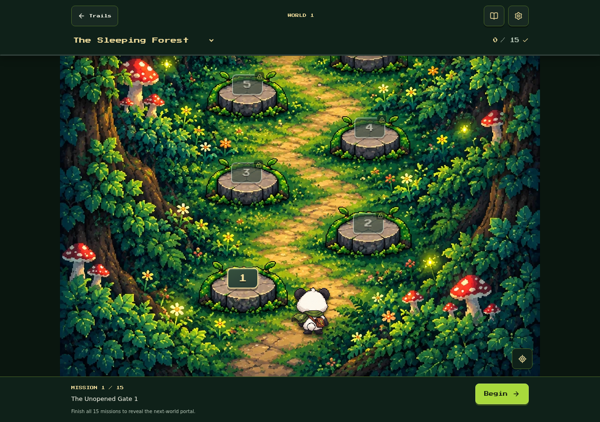
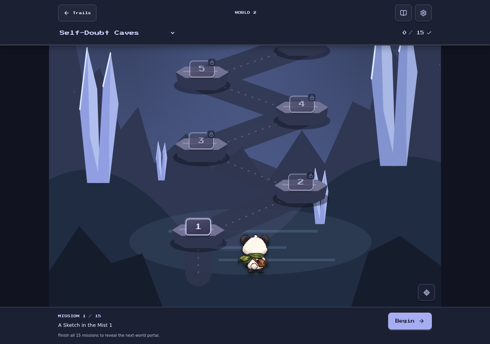
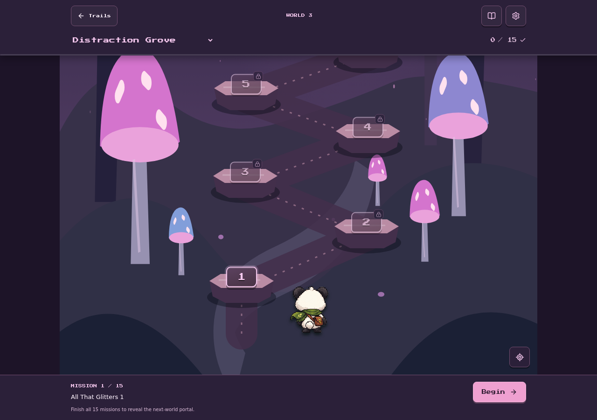
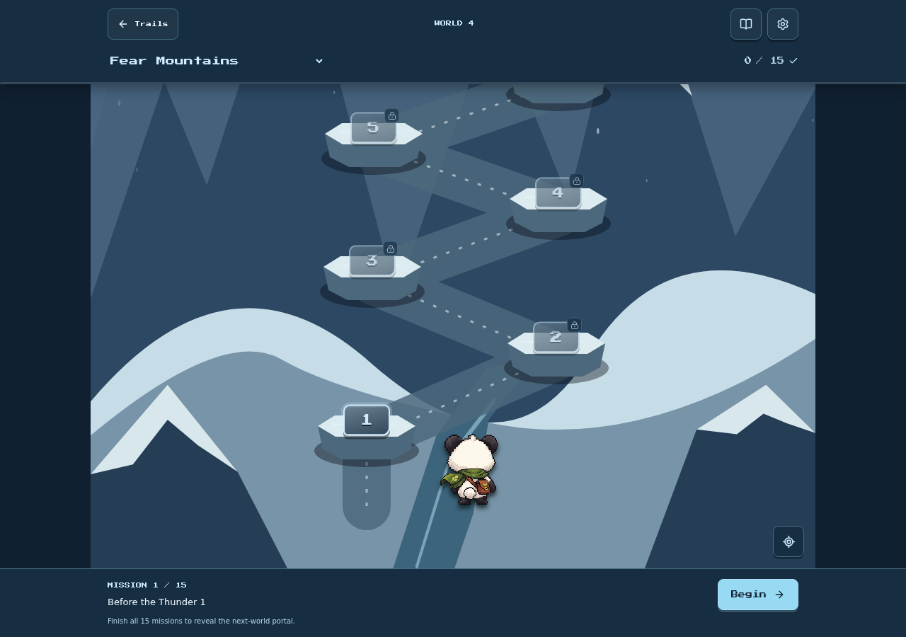
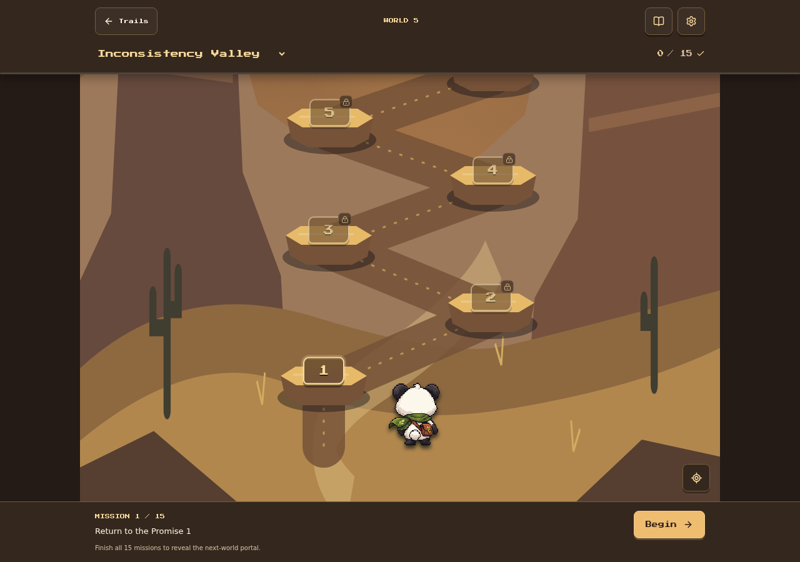
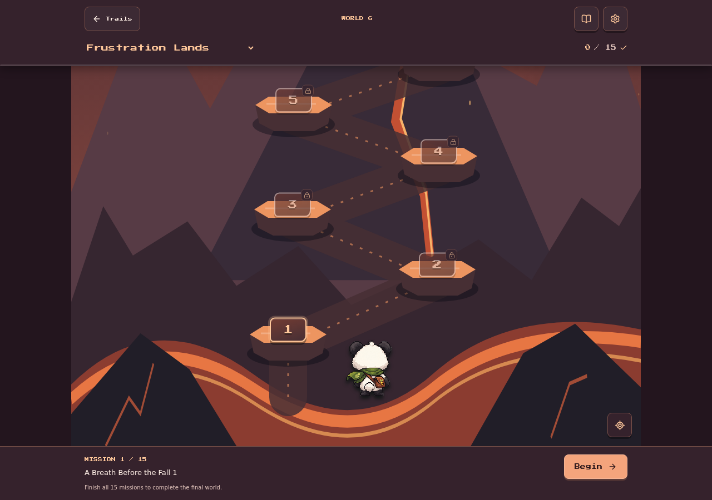

The Sleeping Forest
Green stone trail · Days 1–15

The scenery, stones, buttons, and colors follow the world. Each trail has 15 missions.
Green stone trail · Days 1–15

Crystal ledges · Days 16–30

Glowing mushroom paths · Days 31–45

Snowy stone steps · Days 46–60

Golden canyon trail · Days 61–75

Volcanic trail · Bonus adventure
